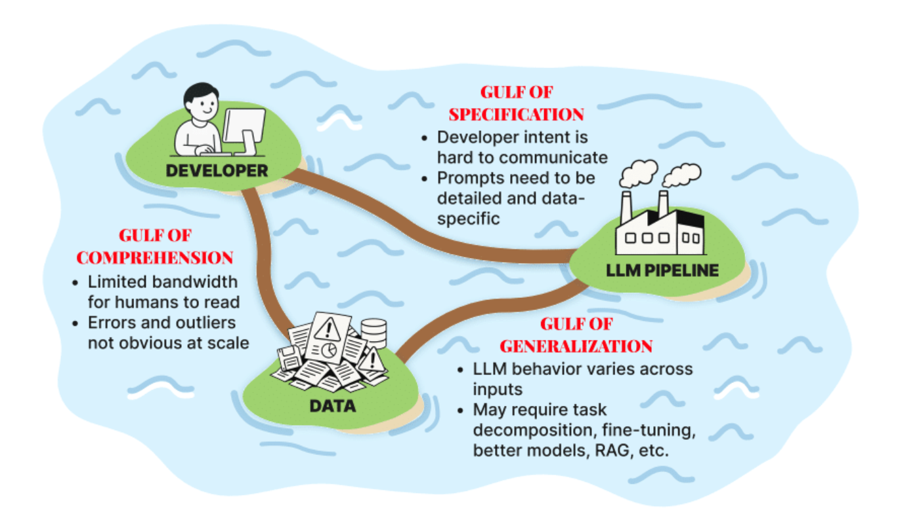
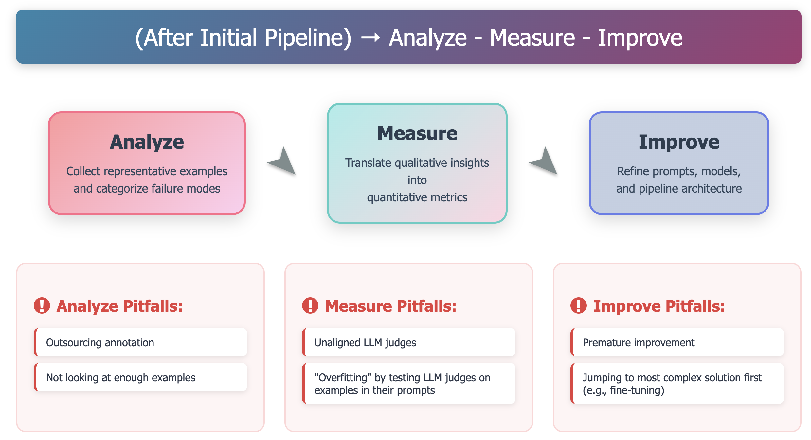

📘 Chapter Summary: LLMs, Prompts, and Evaluation Basics
📌 Quick Navigation
LLM Pipeline Evaluation Guide
Table of Contents
- Introduction
- What is Evaluation?
- The Three Gulfs of LLM Pipeline Development
- Why LLM Pipeline Evaluation is Challenging
- The LLM Evaluation Lifecycle
- Summary
- LLMs, Prompts, and Evaluation Basics
- Strengths and Weaknesses of LLMs
- Prompting Fundamentals
- Defining "Good": Types of Evaluation Metrics
- Foundation Models vs. Application-Centric Evals
- Eliciting Labels for Metric Computation
- Summary
- Exercise
- Glossary of Terms
Introduction
The primary goal of the course is to address the challenge of assessing LLM pipeline performance and diagnosing failures. It focuses on evaluating LLM pipelines within specific applications, not general-purpose foundation model training or benchmarking.
What is Evaluation?
Evaluation refers to the systematic measurement of quality in an LLM pipeline, aiming to produce easily and unambiguously interpretable results, typically a quantitative score or a structured qualitative summary. An "eval" is an evaluation metric, and a single pipeline often uses multiple evals to measure different performance aspects.
Evals can be operationalized in several ways:
- Background Monitoring passively tracks evals over time to detect drift or degradation
- Guardrails run evals in the critical path of the pipeline, potentially blocking output, retrying operations, or falling back to safer alternatives if an eval fails
- Evals are also used to improve pipelines by labeling data for fine-tuning, selecting high-quality few-shot examples, or identifying failure cases that motivate architectural changes
Evals are crucial for catching errors, maintaining user trust, ensuring safety, monitoring system behavior, and enabling systematic improvement.
The Three Gulfs of LLM Pipeline Development
A framework called the "Three Gulfs" model helps understand LLM application development challenges. This model captures major gaps developers must bridge.
Using an "Email Processing Pipeline" example (extracting sender name, summarizing requests, categorizing emails):
Gulf of Comprehension (Developer → Data)
This gulf separates the developer from fully understanding their data and the pipeline's behavior on that data. At scale, it's hard to know input data characteristics, detect errors, or identify unusual patterns (e.g., thousands of diverse emails daily). It also extends to understanding the LLM pipeline's actual outputs and common failure modes across the input space without manual inspection of every trace.
Gulf of Specification (Developer → LLM Pipeline)
This gulf represents the gap between a developer's intent and what is actually specified in the pipeline. Precisely specifying tasks in natural language (prompts) is difficult, often leaving crucial details unstated (e.g., summary format, sender name details, conciseness of summary). Without complete instructions, the LLM "guesses" the intent, leading to inconsistent outputs.
Gulf of Generalization (Data → LLM Pipeline)
This gulf refers to inconsistencies in LLM behavior across different inputs, even with carefully written prompts. For example, an email processing model might mistakenly extract public figures' names as senders because it hasn't generalized properly across diverse data. This gulf will always exist to some degree, as no model is perfectly accurate on all inputs.

Why LLM Pipeline Evaluation is Challenging
Developing effective LLM pipeline evaluations is difficult and requires new approaches distinct from traditional software engineering and MLOps. The challenges include:
- Application-Specific Nature: Each application requires bridging the Three Gulfs anew, as failure modes are unique to the task and dataset
- Evolving Requirements: Evaluation criteria often emerge and evolve only after interacting with early outputs
- Non-Obvious Metrics: Appropriate metrics are rarely clear from the outset due to LLM pipelines involving tradeoffs (e.g., factual accuracy, completeness, conciseness, style)
- Need for Real Output Analysis: Generic benchmarks are insufficient; there is no substitute for systematically examining real outputs on real data to capture specific failure modes
The LLM Evaluation Lifecycle
The course introduces a practical, iterative approach: the Analyze-Measure-Improve lifecycle. This lifecycle provides a repeatable method for building, validating, and refining LLM pipelines to overcome the Three Gulfs:
Analyze
This phase tackles the Gulf of Comprehension by inspecting pipeline behavior on representative data to qualitatively identify failure modes. These findings often point to ambiguous instructions (Specification issues) or inconsistent performance (Generalization issues).
Measure
This phase is driven by the need for quantitative data. It involves developing and deploying specific evaluators to quantitatively assess failure modes identified in the Analyze phase, especially those needing further scrutiny. This provides hard numbers on failure rates and patterns, crucial for prioritizing fixes and diagnosing complex generalization failures.
Improve
This phase leverages findings from both Analyze and Measure to bridge the Gulfs of Specification and Generalization. Interventions include direct fixes to prompts for Specification issues and data-driven efforts (guided by quantitative results) to enhance generalization (e.g., engineering better examples, refining retrieval strategies, adjusting architectures, or fine-tuning models).
Cycling through Analyze, Measure, and Improve creates a powerful feedback loop for systematically navigating LLM complexities, leading to more reliable applications.

Summary
The key takeaways from the introduction are: - Evaluation is essential for any serious LLM application - The Three Gulfs model helps categorize and diagnose failures - Appropriate metric choice requires examining specific data and use cases - The Analyze-Measure-Improve lifecycle provides a structured method for building better evaluations over time
LLMs, Prompts, and Evaluation Basics
This section assumes a foundational understanding of LLMs as AI systems trained to understand and generate human-like language, interacted with via textual inputs known as prompts.
Strengths and Weaknesses of LLMs
Strengths of LLMs:
- Capable of producing fluent, coherent, and grammatically correct text
- Excellent at editing tasks (simplifying sentences, adjusting tone)
- Effective at summarization, translation, and question answering due to their ability to make sense of information across a prompt
- Generalize easily to new tasks with a single prompt or few demonstrations, without retraining
Limitations of LLMs:
- Algorithmic Generalization: Lack internal mechanisms for loops or recursion, preventing reliable execution of tasks needing variable iterative steps (e.g., arbitrary-precision arithmetic, complex graph traversal). Generalization on algorithmic tasks beyond training data is often poor
- Context Window: Processing is limited by an effective context window, shorter than advertised, leading to degradation of attention quality and output reliability with length
- Reliability and Consistency: Outputs are probabilistic, introducing nondeterminism where identical prompts can yield different outputs. They lack built-in mechanisms for global consistency and may contradict earlier statements
- Prompt Sensitivity: Small changes in phrasing can lead to dramatically different completions
- Factuality: LLMs have no internal notion of "truth"; their objective is statistical likelihood, not factual verification, leading to hallucinations (confidently asserting incorrect or fabricated claims). Achieving factual accuracy often requires additional components like Retrieval-Augmented Generation (RAG) or external tools
Key Takeaway: LLMs should be treated as powerful but imperfect components, leveraging their strengths while anticipating variability, inaccuracies, and limitations in multi-step reasoning.
Prompting Fundamentals
Prompting is the act of crafting input text to elicit desired LLM output, serving to bridge the Gulf of Specification. A well-structured prompt typically includes:
- Role and Objective: Defines the LLM's persona and overall goal
- Instructions / Response Rules: Clear, specific, unambiguous directives for the task, using lists for clarity
- Context: Relevant background information, data, or text
- Examples (Few-Shot Prompting): One or more input-output pairs to guide format, style, and detail. Important behaviors in examples should also be explicitly stated in rules
- Reasoning Steps (Inducing Chain-of-Thought - CoT): Instructing the model to "think step by step" to break down problems, leading to more accurate outputs
- Output Formatting Constraints: Explicitly defines the desired structure, format, or constraints for the response (e.g., JSON format, single paragraph)
- Delimiters and Structure: Uses clear delimiters (e.g., Markdown headers, triple backticks, XML tags) to separate prompt parts, helping the model understand distinct components
Finding the perfect prompt is an iterative process of writing, testing, analyzing outputs, identifying failures, and refining.
Defining "Good": Types of Evaluation Metrics
Evaluation metrics systematically measure LLM pipeline quality and fall into two categories:
Reference-Based Metrics
Compare LLM output against a known, ground-truth answer ("reference" or "golden" output). Useful during development and offline testing (e.g., unit tests). Examples include: - Exact string match - Keyword presence - Executing generated SQL/code against expected results - Using an oracle (LLM judge or human) for semantic equivalence
Reference-Free Metrics
Evaluate LLM output based on its inherent properties or adherence to rules, without a specific "golden" answer. Crucial for subjective, creative, or multi-valid-response outputs. Examples include: - Checking for speculative claims - Valid code syntax - Adherence to brand voice - Valid API parameter names
These are vital in production where real-time ground truth is impractical.
Foundation Models vs. Application-Centric Evals
Foundation Model Evals
Assess general capabilities and knowledge of the base LLM itself using public benchmarks (e.g., MMLU, HELM, GSM8k). They provide a rough sense of a model's power for initial selection.
Application Evals
The primary day-to-day focus for engineers and product builders. Their purpose is to assess if a specific pipeline performs successfully on its specific task using realistic data. These rely heavily on custom-designed metrics to capture unique quality criteria (e.g., helpfulness to users, adherence to specific output formats, domain-relevant safety constraints). Generic metrics are often viewed with skepticism for application-specific evaluation.
Eliciting Labels for Metric Computation
For computing metrics, especially reference-free ones, structured judgment is needed, often from human reviewers or another LLM (LLM-as-judge). Common methods include:
Direct Grading or Scoring
An evaluator assesses a single output against a predefined rubric (e.g., 1-5 scale, Pass/Fail, categorical labels). Requires extremely clear, unambiguous definitions for each score/label, with simpler binary judgments often being more consistent initially.
Pairwise Comparison
Evaluator chooses which of two outputs (A or B) is better for the same input based on a specific criterion. Often cognitively easier than assigning a precise score.
Ranking
Evaluator orders three or more outputs from best to worst for the same input according to a defined quality dimension. Provides more granular relative information but requires more effort.
Key Takeaway - Eliciting Feedback: Generating evaluation data, especially for reference-free metrics, relies on structured judgment based on clear criteria using methods like direct grading, pairwise comparison, and ranking.
Summary
This section established a conceptual foundation for LLM evaluation, viewing LLMs as powerful but fallible components, emphasizing careful and iterative prompting, distinguishing between reference-based and reference-free metrics, and contrasting foundation model benchmarks with application-specific evaluation needs. It also explored practical methods for eliciting evaluation feedback.
✅ Summary
| Prompt Type | Behavior Observed |
|---|---|
| Zero-shot | Weak on complex reasoning |
| Few-shot | Helps but still prone to hallucination |
| CoT (Step-by-step) | Strongest for logic-heavy tasks |
| Role-playing | Adds structure and specificity |
| Multi-turn | Decomposes reasoning for depth |
| Evaluation Prompt | Essential for human judgment of quality |
Exercise
- Exercise 1: Prompt Engineering
- Exercise 2: Metric Classification
- Exercise 3: Foundation vs. Application Evals
- Exercise 4: Eliciting Labels (Travel Assistant)
Exercise 1: Prompt Engineering
Task: You need to summarize customer support emails into a list of action items.
Part (a)
Question: Write a zero-shot prompt including instruction and formatting constraints.
Solution:
Summarize the following support email into bullet-point action items. Email: [EMAIL TEXT]
Part (b)
Question: Extend it to a one-shot prompt with an example.
Solution:
Example: Email: 'My account locked...'; Action items: – Reset password – Verify email on file –-– Now summarize: [EMAIL TEXT]
Exercise 2: Metric Classification
Task: For each of these metrics, state whether it is reference-based or reference-free, and justify in one sentence:
Part (a)
Question: Exact match accuracy against ground-truth SQL.
Solution: Reference-based—compares to known SQL.
Part (b)
Question: Checking generated code compiles without errors.
Solution: Reference-free—checks validity of code, no ground truth.
Part (c)
Question: ROUGE score against human summary.
Solution: Reference-based—measures overlap with human summary.
Part (d)
Question: Verifying no speculative claims in a generated summary.
Solution: Reference-free—checks property of output, not against reference.
Exercise 3: Foundation vs. Application Evals
Task: Suppose you choose between GPT-4 and Claude for a legal-document summarizer.
Part (a)
Question: Name one foundation benchmark you would consult and why.
Solution: MMLU—measures general reasoning across domains.
Part (b)
Question: Design an application-specific eval test for fidelity to client needs.
Solution: Collect 20 real legal memos, have attorneys rate summaries on accuracy and relevance, binary Pass/Fail.
Exercise 4: Eliciting Labels (Travel Assistant)
Task: You need to evaluate whether a travel assistant's flight recommendations respect the user's budget constraint.
Part (a)
Question: Write a direct-grading rubric with two labels: Within Budget and Over Budget, and clear criteria for each.
Solution - Direct-Grading Rubric: - Within Budget: All suggested flights have price ≤ user's maxPrice. - Over Budget: At least one suggested flight exceeds the user's maxPrice.
Part (b)
Question: Draft a pairwise-comparison instruction for an annotator to choose which of two flight suggestion lists better adheres to the budget.
Solution - Pairwise-Comparison Instruction:
Sample Prompt
You are given a user query: "Find flights under $300 from JFK to LAX."
You also have two lists of three flight options (A and B). Choose which
list better respects the budget constraint and reply with "A" or "B,"
followed by a one-sentence justification.
Part (c)
Question: In 2–3 sentences, explain when you would prefer direct grading versus pairwise comparison for this task.
Solution - When to Use: Direct grading is ideal when you need an absolute adherence rate and the criterion is unambiguous. Pairwise comparison is preferable when distinguishing among borderline cases or when annotators find relative judgments easier than strict binary labels.
- Exercise 1: Prompt Engineering
- Exercise 2: Metric Classification
- Exercise 3: Foundation vs. Application Evals
- Exercise 4: Eliciting Labels (Travel Assistant)
Exercise 1: Prompt Engineering
Task: You need to summarize customer support emails into a list of action items.
Part (a)
Question: Write a zero-shot prompt including instruction and formatting constraints.
Solution:
Summarize the following support email into bullet-point action items. Email: [EMAIL TEXT]
Part (b)
Question: Extend it to a one-shot prompt with an example.
Solution:
Example: Email: 'My account locked...'; Action items: – Reset password – Verify email on file –-– Now summarize: [EMAIL TEXT]
Exercise 2: Metric Classification
Task: For each of these metrics, state whether it is reference-based or reference-free, and justify in one sentence:
Part (a)
Question: Exact match accuracy against ground-truth SQL.
Solution: Reference-based—compares to known SQL.
Part (b)
Question: Checking generated code compiles without errors.
Solution: Reference-free—checks validity of code, no ground truth.
Part (c)
Question: ROUGE score against human summary.
Solution: Reference-based—measures overlap with human summary.
Part (d)
Question: Verifying no speculative claims in a generated summary.
Solution: Reference-free—checks property of output, not against reference.
Exercise 3: Foundation vs. Application Evals
Task: Suppose you choose between GPT-4 and Claude for a legal-document summarizer.
Part (a)
Question: Name one foundation benchmark you would consult and why.
Solution: MMLU—measures general reasoning across domains.
Part (b)
Question: Design an application-specific eval test for fidelity to client needs.
Solution: Collect 20 real legal memos, have attorneys rate summaries on accuracy and relevance, binary Pass/Fail.
Exercise 4: Eliciting Labels (Travel Assistant)
Task: You need to evaluate whether a travel assistant's flight recommendations respect the user's budget constraint.
Part (a)
Question: Write a direct-grading rubric with two labels: Within Budget and Over Budget, and clear criteria for each.
Solution - Direct-Grading Rubric: - Within Budget: All suggested flights have price ≤ user's maxPrice. - Over Budget: At least one suggested flight exceeds the user's maxPrice.
Part (b)
Question: Draft a pairwise-comparison instruction for an annotator to choose which of two flight suggestion lists better adheres to the budget.
Solution - Pairwise-Comparison Instruction:
Sample Prompt
You are given a user query: "Find flights under $300 from JFK to LAX."
You also have two lists of three flight options (A and B). Choose which
list better respects the budget constraint and reply with "A" or "B,"
followed by a one-sentence justification.
Part (c)
Question: In 2–3 sentences, explain when you would prefer direct grading versus pairwise comparison for this task.
Solution - When to Use: Direct grading is ideal when you need an absolute adherence rate and the criterion is unambiguous. Pairwise comparison is preferable when distinguishing among borderline cases or when annotators find relative judgments easier than strict binary labels.
Glossary of Terms
- Large Language Model (LLM): A model trained on massive text corpora to generate and understand human-like language
- Foundation Model: A large, general-purpose model trained on diverse data to predict the next token, internalizing grammar, facts, and language structure
- Token: The smallest unit of text processed by an LLM (word, subword, punctuation)
- Context Window: The sequence of previous tokens an LLM uses to generate the next one, limited in size
- Prompt: The input text used to elicit output from an LLM, including instructions, context, examples, and formatting constraints
- Evaluation / Metric: A method for judging output quality, which can be reference-based or reference-free
- Pre-training: The initial training phase where the LLM learns by predicting the next token across vast text datasets, imparting broad linguistic and factual knowledge
- Attention: A mechanism in transformer models that computes relevance scores between tokens, allowing selective focus on input parts
- Post-training: Stage after pre-training that aligns the model with human intent, including Supervised Fine-Tuning (SFT) and Reinforcement Learning from Human Feedback (RLHF), and Direct Preference Optimization (DPO)
- Supervised Fine-Tuning (SFT): Additional training using labeled examples of desired prompt-response behavior
- RLHF (Reinforcement Learning from Human Feedback): Technique using human preferences to train a reward model that guides LLM fine-tuning
- DPO (Direct Preference Optimization): Recent method that fine-tunes directly using human preference rankings, skipping the reward model